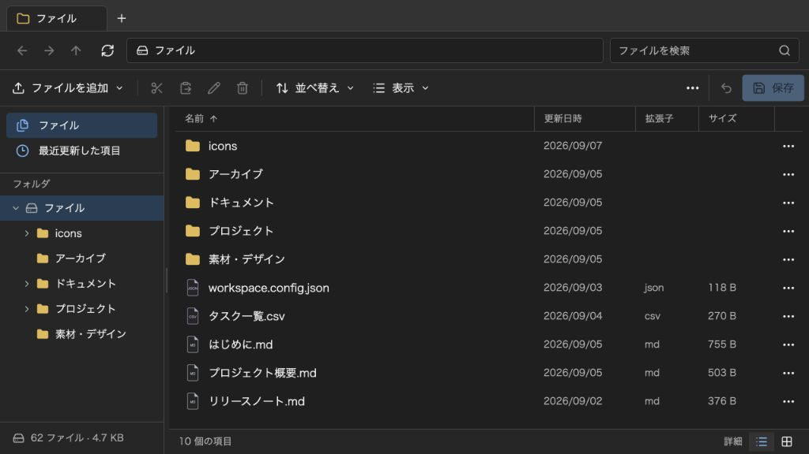

@likex/explorer
導入と初期表示
Explorerを配置し、最初に開くフォルダとファイルを指定します。
画面例を見る ↓依存関係、CSSの読み込み、Next.jsへの配置と最初に開く場所を設定します。
依存関係とCSS#
React / React DOM 19を前提としています。ソースをコピーする場合は、次の実行時依存を追加します。パッケージ導入では自動的に導入されます。
npm install radix-ui@1.6.7 lucide-react@1.31.0 tailwind-merge@3.6.0packages/explorer/src/ の中身（この docs/ の親フォルダ）を components/explorer/、packages/core/src/ を components/core/ へコピーします。components/explorer/core.ts の1行を export * from "../core"; に変更し、styles.css をアプリの入口で1回読み込みます。Next.js App Routerでは app/layout.tsx に書けます。CSSをimportする親と、コールバックを渡すClient Componentは別ファイルでも構いません。
// ソースコピーの場合
import "@/components/explorer/styles.css";
// npmパッケージの場合はこちらを使用
// import "@likex/explorer/styles.css";利用側のTailwind CSS・専用PostCSS設定・@source指定は不要です。 既にTailwindを導入している場合も、既存設定を変更せず同じCSSを読み込めます。CSSは自動挿入せず、アプリ側から明示的に読み込む契約です。
CSSを二重管理しないための開発手順#
TSXの lxe: 付きTailwindクラスと、このリポジトリの packages/explorer/styles/input.css が原本です。src/styles.css は生成物で、手編集しません。コピー利用のためGit管理し、ビルドは同じ内容を dist/styles.css へ配置します。
# LikeXリポジトリで実行
npm run build:styles
npm run check:stylesbuild:styles は必要なCSSを再生成し、check:styles は原本と生成物の不一致を検出します。配布ビルドでも自動生成し、playgroundではソース編集に追従して再生成します。
theme、colorMode、styleによる変更はCSSの再生成を必要としません。コピー先で内部のTailwindクラスを編集する場合はCSSも再生成する必要があります。LikeXの原本へ変更を反映し、build:styles 後にフォルダをコピーし直すか、同じ生成ツール一式を開発環境へ用意してください。利用だけであれば生成ツールは不要です。
App Routerで使う最小例#
保存関数を渡す親をClient Componentにし、表示する枠の高さを指定します。次の例は親のReact stateに保存するだけのメモリ保存です。再読み込みすると空の一覧に戻ります。
"use client";
import { useState } from "react";
import Explorer, { type ExplorerEntry } from "@/components/explorer";
export default function FileManager() {
const [savedEntries, setSavedEntries] = useState<ExplorerEntry[]>([]);
return (
<div style={{ height: 640, minWidth: 0 }}>
<Explorer
initialEntries={savedEntries}
onSave={({ entries }) => {
setSavedEntries(entries);
return entries;
}}
/>
</div>
);
}このClient Componentをページから表示します。@/ を設定していないプロジェクトでは、importを配置先への相対パスに変更してください。
ルートの表示名は標準で「ファイル」です。<Explorer initialEntries={savedEntries} onSave={save} rootLabel="記事一覧" /> のように rootLabel で変更できます（save は親の保存関数）。前後の空白は除去し、空白のみなら「ファイル」を使います。タブ、パンくず、サイドバー、移動先、保存場所の表示に反映し、内部のルートID root と絶対パス / は変わりません。
アドレスバーでは区切り文字を含まないルート名を別名として使えます。標準なら ファイル/ドキュメント、上の例なら 記事一覧/ドキュメント でルート直下へ移動します。同じ名前の実フォルダは /ファイル や ./ファイル のように指定します。
右上のタイトルを指定する#
Explorer と ExplorerPopup に共通の title?: string で、タブバー右上の表示名を指定できます。save は親の保存関数です。
<Explorer
initialEntries={savedEntries}
onSave={save}
title="資料管理"
/>前後の空白を除去し、省略・空文字・空白のみの場合は何も表示しません。マウント後に title を変更すると、現在の表示と子・孫ウィンドウにも反映します。タブバーが非表示の場合や表示幅が狭い場合は、このタイトルも表示しません。長いタイトルはヘッダー幅の最大30%以内で省略表示し、マウスを重ねると全文を確認できます。
この設定はタブバー右上のラベルだけに使い、現在地のタブ名、ルートの表示名 rootLabel、ブラウザの document.title、Explorer領域の aria-label には影響しません。
最初に開くフォルダを指定する#
defaultPath?: string は、「＋」で追加するタブで開くフォルダを指定します。後述する initialPath・selectedFile による初期位置の指定がなければ、最初のタブにも使います。省略または空白のみなら /（ルート）です。例えば、親から渡す savedEntries に /記事/画像 が存在する場合は、次のように設定します。save は親の保存関数です。
<Explorer
initialEntries={savedEntries}
onSave={save}
defaultPath="/記事/画像"
/>パスはアドレスバーと同じ規則（resolveExplorerPath）で、ルートを基準に既存のフォルダへ解決します。記事/画像 のような相対表記もルート基準で、rootLabel はルートの別名として使えます。Blobの保存キー・URL・PCのファイルパスを指定するものではありません。
defaultPath は初回マウント時にだけ読み、解決したフォルダIDを保持します。マウント後にpropを変えても現在位置や新規タブの開始位置は変更しません。別の設定で開き直す場合はExplorerのReact key を変えてください。指定したフォルダを改名・移動しても同じIDを追い、新規タブもそのフォルダから開きます。削除して存在しなくなった場合はルートから開きます。
不正なパス、存在しない場所、ファイル本体のパスを指定した場合はルートを表示し、初回にエラー通知を出します。features.pathInput: false や features.tabs: false でも開始位置の指定は有効です。指定したフォルダを新しいルートとして扱う設定ではなく、親や別のフォルダへの通常の移動もできます。
最初に開くパスとファイルを指定する#
initialPath は最初のタブだけの開始フォルダ、selectedFile は初期選択するファイルの ExplorerEntry.id です。次の例は /記事/画像 を開き、その直下にあるID file-cover のファイルを選択します。「＋」の新規タブは defaultPath の /記事 から開きます。
<Explorer
initialEntries={savedEntries}
onSave={save}
defaultPath="/記事"
initialPath="/記事/画像"
selectedFile="file-cover"
selectedFileMode="select"
/>| 初期指定 | 最初に開く場所と動作 |
|---|---|
initialPath のみ | 指定フォルダを開きます。 |
selectedFile のみ | ファイルの親フォルダを開いて選択します。defaultPath があっても対象の親を優先します。 |
| 両方 | 指定フォルダを開き、その直下の対象ファイルを選択します。別フォルダにあるIDなら無選択で通知します。 |
| どちらも省略 | 従来どおり defaultPath、省略時はルートを開きます。 |
initialPath は defaultPath と同じ仮想パスの規則です。空文字・空白のみを明示した場合はルートを指定した扱いになります。不正なパス・存在しないフォルダ・ファイル本体のパスならルートへ戻して通知します。selectedFile に存在しないIDやフォルダIDを渡した場合は選択せず通知します。selectedFile はファイル名・ファイルパス・本体参照の source.id ではありません。
selectedFileMode の既定は "select" です。"preview" にするとファイルを選択したうえで、クライアントでの初期表示時にプレビューも開きます。onPreviewRequest があれば親へ要求を渡し、なければ内蔵プレビューを使います。previewTrigger のクリック設定とは独立しています。プレビューの連携
<Explorer
initialEntries={savedEntries}
selectedFile="file-cover"
selectedFileMode="preview"
readFile={readFile}
/>初期選択・プレビューは読み取り専用でも使え、保存対象の変更にはなりません。features.preview: false ならプレビューせず選択だけ行います。selection.mode: "none" なら選択を行いませんが、プレビューを有効にしていれば開けます。
これらのpropsは初回マウント時だけ読みます。後からのprop変更、再取得、「＋」の新規タブで初期選択・プレビューを繰り返しません。別のファイルを指定して開き直す場合は <Explorer key={fileId} selectedFile={fileId} ... /> のように再マウントします。未保存の変更がある場合は、親が key を変える前に確認してください。
画面例
{kind=link}
